Zero to Cloud-Native with IBM Cloud
Part 15: Create a OpenVPN Server and Client To Connect to a Private Network
Kevin Collins ( kevincollins@us.ibm.com )
Kunal Malhotra ( kunal.malhotra3@ibm.com )
1 - Introduction
In this section, we will be setting up an OpenVPN connection to connect to our private only satellite cluster that is running on a private only VPC. By deploying your cluster on a private only cluster adds in an additional layer of security and in the case of this tutorial series offers a more realistic scenario in deploying to a remote satellite location.
In order to setup this VPN connection, we will need to deploy both a server and a client. For the server, we will deploy a 'jump server' VSI in our zero to cloud native VPC and then use your workstation as the client.
2 - VPN Server
As a reference, this guide will follow the basic instructions below, however there are a couple of different settings that you will need in place to work on your virtual private cloud.
To get started, the first thing we will do is provision a VSI for our VPN Server.
2.1 Provision VPC Infrastructure
Start by navigating to VPC Infrastructure and then select VPC Instances.
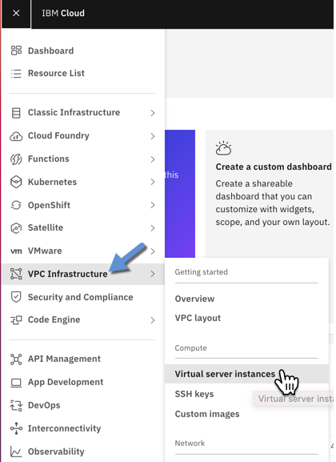
On the next screen, click on Create to create a new VPC Instance.
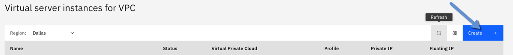
Enter the following settings on the next screen:
Name: vpn-02cn
Resource Group: zero-to-cloud-native
Location: Dallas 1
Operating System: Ubuntu Linux 16.04 LTS
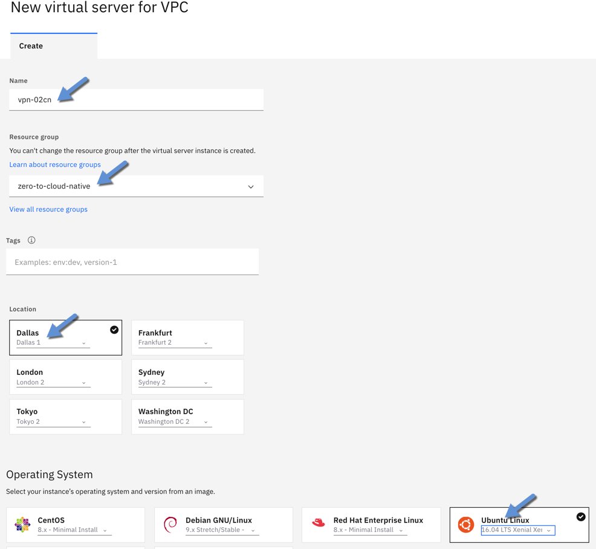
In the profile section, select Balanced bx2-4x16 and make sure to select your SSH Key.
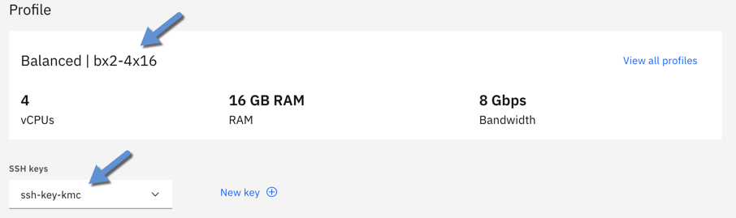
In the networking section, select zero-to-cloud-native-satellite-vpc.
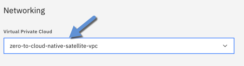
Finally, on the right hand side of the screen, click on Create virtual server instance.
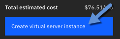
Next, since this VSI will be our VPN Server, we need to give it a public IP. To do so, click on Floating IPs in VPC / Network menu.
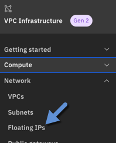
On the next screen, click on Create to create a new floating IP.
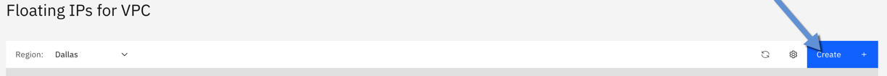
On the next screen, enter the following settings for the new floating IP.
Name: vpn-02cn-ip
Resource Group: zero-to-cloud-native
Location: Dallas 1
Instance to bind: vpn-02cn
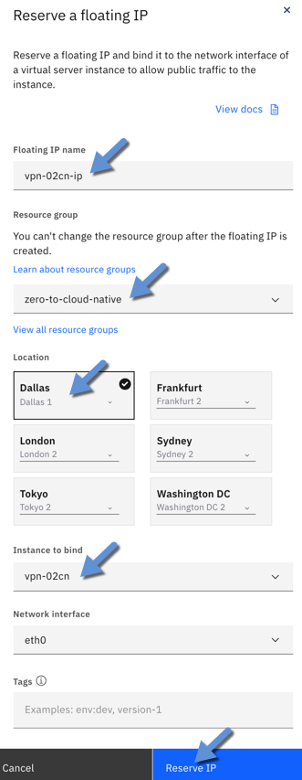
After entering these settings, click on Reserve IP.
Hover above the floating IP you just created and click Copy IP address. Keep track of this floating IP as we will need to throughout this tutorial.
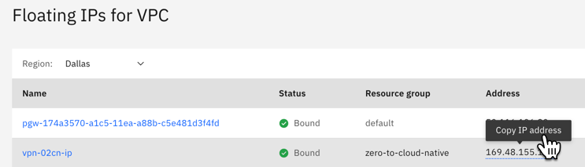
Now that we have a floating IP, we can SSH into the virtual server instance we created to setup our VPN connection.
2.2 Configure OpenVPN Server
Now that we have our VSI provisioned with a public IP, we can now start configuring it. Start your terminal and SSH into the VSI.
ssh -i ~/.ssh/kevincollins@us.ibm.com <root@169.48.155.171>
*note: make sure to select the location of your SSH key that we previously setup.
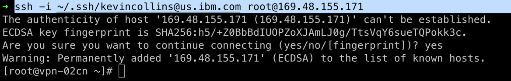
2.2.1 Install OpenVPN
Next, we will install OpenVPN. Run the following commands from your terminal. For more background on each command, refer to the source here:
https://www.digitalocean.com/community/tutorials/how-to-set-up-an-openvpn-server-on-ubuntu-16-04
sudo apt-get update
sudo apt-get install openvpn easy-rsa
make-cadir ~/openvpn-ca
cd ~/openvpn-ca
The OpenVPN connection will be secured by certificates that we need to create. To create certificates, there are a number of variables that we need to set. To do so, you will need to edit a file called vars.
vi vars
Scroll down in the file and enter values as follows:
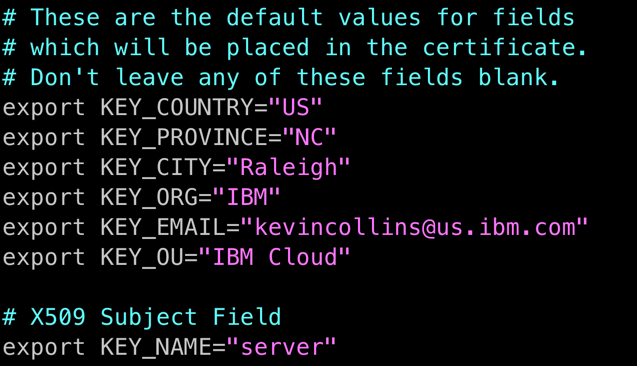
*Note, this is informational only and you can add whatever you want here. After making the changes, save the file.
Going back to configuring the OpenVPN server, enter these commands:
cd ~/openvpn-ca
source vars
./clean-all
./build-ca
(Hit Enter to select all the default values )
./build-key-server server
(Hit Enter to select all the default values and hit 'y' twice to generate the certificate )
./build-dh
openvpn --genkey --secret keys/ta.key
source vars
./build-key client1
cd keys
cp ca.crt server.crt server.key ta.key dh2048.pem /etc/openvpn
gunzip -c /usr/share/doc/openvpn/examples/sample-config-files/server.conf.gz |
sudo tee /etc/openvpn/server.conf
vi /etc/openvpn/server.conf
Copy and paste the following into this file, make sure to enter the routes for your VPC, see below on how to do that.
#################################################
# Sample OpenVPN 2.0 config file for #
# IBM VPC #
#################################################
port 1194
proto udp
dev tun
ca ca.crt
cert server.crt
key server.key # This file should be kept secret
dh dh2048.pem
server 10.8.0.0 255.255.255.0
ifconfig-pool-persist ipp.txt
push "dhcp-option DNS 8.8.8.8"
push "dhcp-option DNS 8.8.4.4"
# update with routes from your VPC
push "route 10.240.0.0 255.255.192.0"
push "route 10.240.64.0 255.255.192.0"
push "route 10.240.128.0 255.255.192.0"
keepalive 10 120
tls-auth ta.key 0 # This file is secret
cipher AES-128-CBC # AES
auth SHA256
comp-lzo
user nobody
group nogroup
persist-key
persist-tun
status openvpn-status.log
verb 3
In order for the OpenVPN client to be able to connect to your VPC, you will need to create routes. The first step is finding out what address prefixes you have in your VPC. To find this out, navigate to your VPC in IBM Cloud.
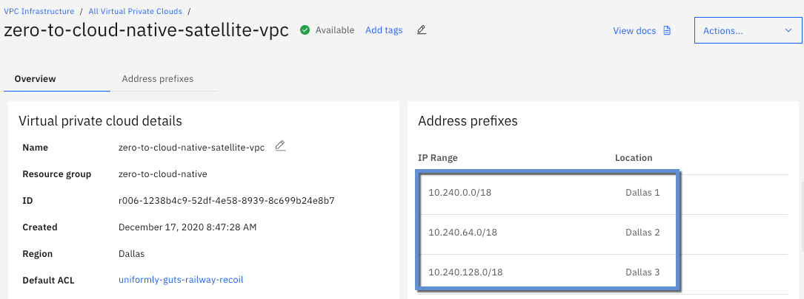
You will notice that there will be three prefixes, one for each location ( dallas 1, dallas 2, dallas 3). These are the values you need to enter as a route in the server.conf file. In my case, I have these address prefixes:
10.240.0.0/18
10.240.64.0/18
10.240.128.0/18
You will need to convert the CIDR range to a netmask. If you followed the earlier instructions for creating a VPC then your subnets will end in /18 which has a subnet mask of 255.255.192.0.
If you have a different CIDR range, then you will need to figure out what the netmask should be. The following website will help with that if needed.
http://www.sput.nl/internet/cidr-routing.html
In my VPC, this results in the following routes:
* push "route 10.240.0.0 255.255.192.0"
push "route 10.240.64.0 255.255.192.0"
push "route 10.240.128.0 255.255.192.0"
The next file we need to update is sysctl.conf.
vi /etc/sysctl.conf
Uncomment the following line:
net.ipv4.ip_forward = 1
sudo sysctl -p
ip route | grep default
Make note of the output, you will need to the interface name which comes after dev.
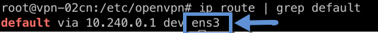
In the case above, that is ens3.
Now we need to edit another file for firewall rules
vi /etc/ufw/before.rules
Add these lines near the top:
# START OPENVPN RULES
# NAT table rules
*nat
:POSTROUTING ACCEPT [0:0]
# Allow traffic from OpenVPN client to wlp11s0 (change to the interface
# you discovered!)
-A POSTROUTING -s 10.8.0.0/8 -o ens3 -j MASQUERADE
COMMIT
# END OPENVPN RULES
Make sure to change ens3 to the value you got in the previous step.
Next, edit another file:
vi /etc/default/ufw
change DEFAULT_FORWARD_POLICY=\"ACCEPT\"
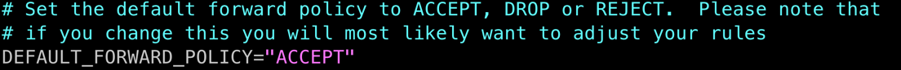 Enter these commands to configure the firewall with the changes we just made:
sudo ufw allow 1194/udp
sudo ufw allow OpenSSH
sudo ufw disable
sudo ufw enable
sudo systemctl start openvpn@server
sudo systemctl status openvpn@server
mkdir -p ~/client-configs/files
chmod 700 ~/client-configs/files
cp /usr/share/doc/openvpn/examples/sample-config-files/client.conf ~/client-configs/base.conf
vi ~/client-configs/base.conf
change the remote my-server-1 line to the floating IP of your VPN instance
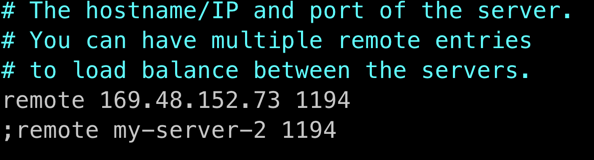
Uncomment the lines:
user nobody
group nogroup
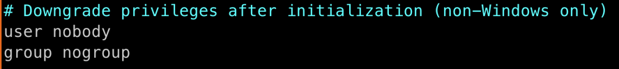 comment out the following lines:
#ca ca.crt
#cert client.crt
#key client.key
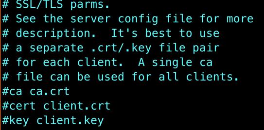
In the cipher section, add these lines:
cipher AES-128-CBC
auth SHA256
key-direction 1
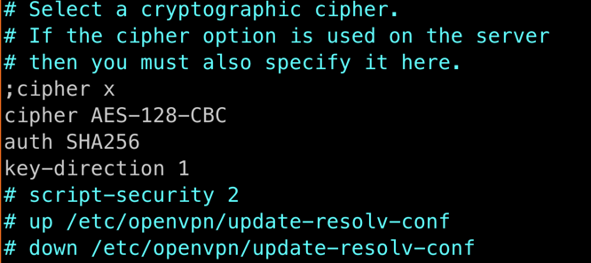
Next create a file that your OpenVPN client will use and paste the following in it:
vi ~/client-configs/make_config.sh
#!/bin/bash
# First argument: Client identifier
KEY_DIR=~/openvpn-ca/keys
OUTPUT_DIR=~/client-configs/files
BASE_CONFIG=~/client-configs/base.conf
cat ${BASE_CONFIG} \
<(echo -e '<ca>') \
${KEY_DIR}/ca.crt \
<(echo -e '</ca>\n<cert>') \
${KEY_DIR}/${1}.crt \
<(echo -e '</cert>\n<key>') \
${KEY_DIR}/${1}.key \
<(echo -e '</key>\n<tls-auth>') \
${KEY_DIR}/ta.key \
<(echo -e '</tls-auth>') \
> ${OUTPUT_DIR}/${1}.ovpn
Change permissions of the file and run it:
chmod 700 ~/client-configs/make_config.sh
cd ~/client-configs
./make_config.sh client1
Finally, you made it, your OpenVPN server is complete! Exit out of the SSH session that is connected to your VPN VSI.
2.2 Configure OpenVPN Server
Back on your terminal to your local machine, we need to create an OpenVPN client. Start by copying the certificates you just created on your VPN server to your local machine.
mkdir vpn-02cn
cd vpn-02cn
Next, copy the client file you created on the VPC VPN Instance to your local machine. Make sure to update the following command to use the public IP of your VPC VPN instance.
scp -i ~/.ssh/kevincollins@us.ibm.com root@169.48.152.73:/root/client-configs/files/client1.ovpn .
Next -- Install the OpenVPN client on your mac following these instructions:
https://openvpn.net/vpn-server-resources/installation-guide-for-openvpn-connect-client-on-macos/
After installing OpenVPN Client, start it.
Click on File, then select the client.ovpn file you just created.
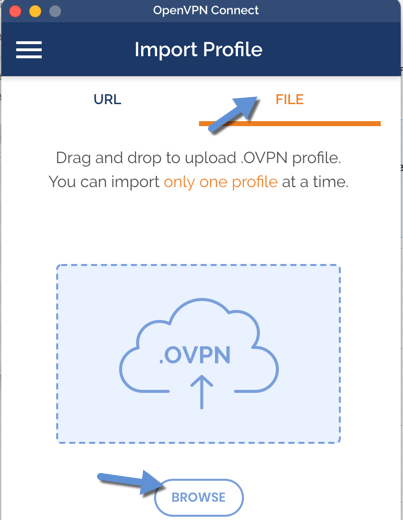
After you connect, your VPN service should look like the following:
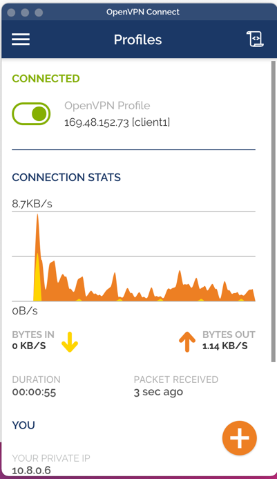